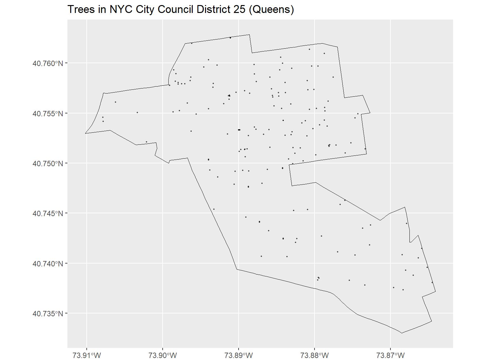
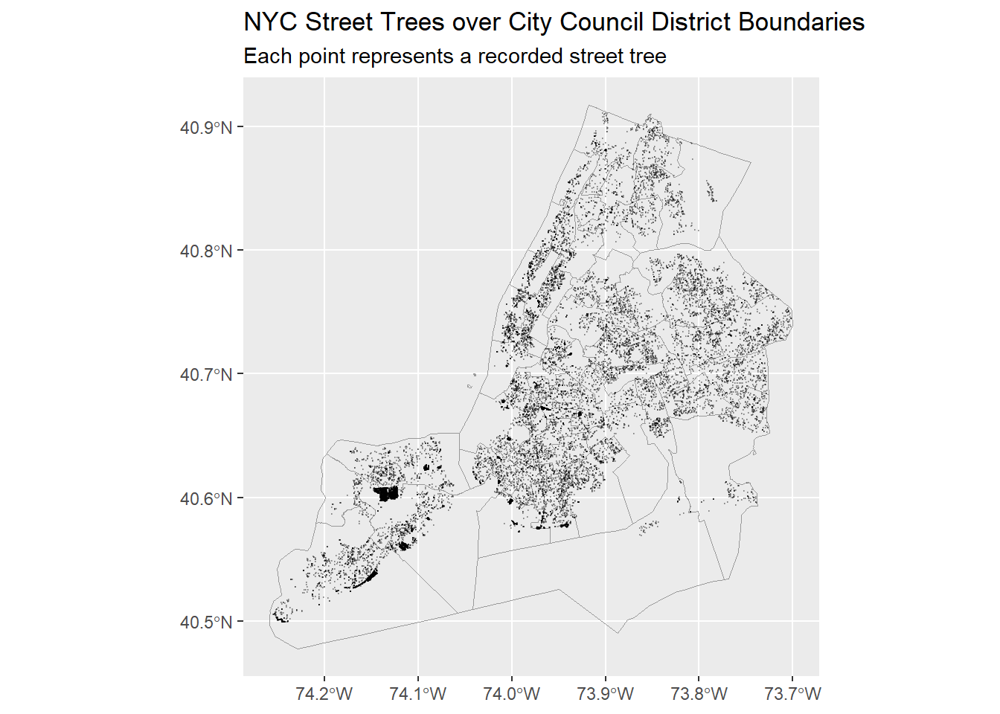

# Global chunk options
knitr::opts_chunk$set(
echo = TRUE,
warning = FALSE,
message = FALSE,
fig.width = 8,
fig.height = 6
)
# Packages
library(sf)
library(tidyverse)
library(httr2)
library(purrr)
# Data directory
dir.create("data/mp03", showWarnings = FALSE, recursive = TRUE)Mini-Project #03: NYC Street Trees and Council Districts
1 Task 1: Data Acquisition and Preparation
1.1 1.1 City Council District Boundaries (NYC Open Data)
download_council_districts <- function(
dest_dir = "data/mp03",
zip_url = "https://data.cityofnewyork.us/api/geospatial/mkqi-d8x3?method=export&format=Shapefile",
zip_name = "nyc_council_districts_open_data.zip"
) {
dir.create(dest_dir, showWarnings = FALSE, recursive = TRUE)
zip_path <- file.path(dest_dir, zip_name)
# Download shapefile zip from NYC Open Data if not already present
if (!file.exists(zip_path)) {
message("Downloading City Council shapefile zip from NYC Open Data ...")
resp <- httr2::request(zip_url) |>
httr2::req_perform()
writeBin(httr2::resp_body_raw(resp), zip_path)
} else {
message("Zip already exists, skipping download.")
}
# List files and check for any .shp
all_files <- list.files(dest_dir, full.names = TRUE)
has_shp <- any(tools::file_ext(all_files) == "shp")
# If no shapefile yet, unzip
if (!has_shp) {
message("Unzipping shapefile ...")
unzip(zip_path, exdir = dest_dir)
all_files <- list.files(dest_dir, full.names = TRUE)
}
shp_files <- all_files[tools::file_ext(all_files) == "shp"]
if (length(shp_files) == 0) {
stop("Could not find .shp file in ", dest_dir)
}
shp_file <- shp_files[1]
nycc_raw <- sf::st_read(shp_file, quiet = TRUE)
# Find the council district column and rename it to COUNDIST
nm <- names(nycc_raw)
nm_lower <- tolower(nm)
possible_lower <- c("coun_dist", "coundist", "council", "council_d",
"councildis", "council_district")
idx <- which(nm_lower %in% possible_lower)
if (length(idx) == 0) {
stop("Could not find council district column. Columns are: ",
paste(nm, collapse = ", "))
}
names(nycc_raw)[idx[1]] <- "COUNDIST"
# Transform to WGS84
nycc_wgs84 <- sf::st_transform(nycc_raw, "WGS84")
# Compute district area in square meters for density calculations
nycc_wgs84$area_m2 <- as.numeric(sf::st_area(nycc_wgs84))
nycc_wgs84
}
nyc_council <- download_council_districts()
nyc_councilSimple feature collection with 51 features and 4 fields
Geometry type: MULTIPOLYGON
Dimension: XY
Bounding box: xmin: -74.25875 ymin: 40.47737 xmax: -73.70001 ymax: 40.91766
Geodetic CRS: WGS 84
First 10 features:
COUNDIST shape_leng shape_area geometry area_m2
1 42 117530.81 411895232 MULTIPOLYGON (((-73.86078 4... 38220229
2 45 56967.63 117904762 MULTIPOLYGON (((-73.92347 4... 10940516
3 20 61223.01 144833269 MULTIPOLYGON (((-73.82433 4... 13439032
4 21 70355.16 150651760 MULTIPOLYGON (((-73.87125 4... 13978895
5 22 86774.78 186235161 MULTIPOLYGON (((-73.87226 4... 17280622
6 19 117797.09 479560205 MULTIPOLYGON (((-73.77896 4... 44497982
7 30 74047.83 168917281 MULTIPOLYGON (((-73.87266 4... 15673850
8 29 61867.75 127849353 MULTIPOLYGON (((-73.84701 4... 11863165
9 51 180520.74 1326829378 MULTIPOLYGON (((-74.1629 40... 123118846
10 23 84551.73 311520683 MULTIPOLYGON (((-73.72021 4... 289059651.2 1.2 Forestry Tree Points (NYC Open Data API)
download_tree_points <- function(
dest_dir = "data/mp03",
base_url = "https://data.cityofnewyork.us/resource/hn5i-inap.geojson",
limit = 10000,
max_pages = 2 # For development; set to Inf for full data when ready
) {
dir.create(dest_dir, showWarnings = FALSE, recursive = TRUE)
all_files <- character()
offset <- 0L
page_id <- 0L
repeat {
page_id <- page_id + 1L
file_path <- file.path(dest_dir, sprintf("treepoints_%06d.geojson", offset))
if (!file.exists(file_path)) {
message("Downloading tree page with offset = ", offset)
resp <- httr2::request(base_url) |>
httr2::req_url_query(
"$limit" = limit,
"$offset" = offset
) |>
httr2::req_perform()
writeLines(httr2::resp_body_string(resp), file_path)
} else {
message("File already exists for offset = ", offset, "; skipping download.")
}
all_files <- c(all_files, file_path)
# Quick check of how many rows in this page
page <- sf::st_read(file_path, quiet = TRUE)
n_obs <- nrow(page)
message("Rows in this page: ", n_obs)
# Stopping conditions:
if (n_obs < limit || page_id >= max_pages) {
message("Stopping pagination.")
break
}
offset <- offset + limit
}
# Read each page, harmonize planteddate type, then bind rows
tree_list <- purrr::map(all_files, function(f) {
x <- sf::st_read(f, quiet = TRUE)
if ("planteddate" %in% names(x)) {
x$planteddate <- as.character(x$planteddate)
}
x
})
trees <- dplyr::bind_rows(tree_list)
sf::st_transform(trees, "WGS84")
}
nyc_trees <- download_tree_points()
nyc_treesSimple feature collection with 20000 features and 13 fields
Geometry type: POINT
Dimension: XY
Bounding box: xmin: -74.25448 ymin: 40.49891 xmax: -73.70139 ymax: 40.91108
Geodetic CRS: WGS 84
First 10 features:
tpcondition stumpdiameter riskratingdate riskrating objectid
1 Excellent <NA> <NA> <NA> 86823
2 Good <NA> <NA> <NA> 87623
3 Poor <NA> <NA> <NA> 88023
4 Fair <NA> 2024-06-28 12:41:55 6 88823
5 Dead <NA> <NA> <NA> 88824
6 Fair <NA> <NA> <NA> 88825
7 Critical <NA> <NA> <NA> 89223
8 Dead <NA> <NA> <NA> 89225
9 Unknown <NA> <NA> <NA> 89625
10 Fair <NA> <NA> <NA> 89626
globalid tpstructure
1 2B457A4C-E0E4-4E17-81C4-A5449F51C804 Full
2 37195E1A-A7EE-4AA4-8389-19A0ED5C46F7 Retired
3 6BA8E72B-1901-4EF3-ABFF-D11680AB4A9B Retired
4 79A5DBAF-F305-4DA1-A4B1-7A8C8D085435 Full
5 182F6647-D9C1-4A45-ADA0-9ADEFD1ECC60 Retired
6 394AEC59-B91C-45AD-93FB-2996B0C09747 Retired
7 8717EC83-F165-495A-A1AA-1064173A681F Retired
8 FD617E56-130C-4E43-A76D-3AF989E37A2F Retired
9 380AB840-F0E9-4B14-A4D6-A99B8861065E Retired
10 8A487A6B-146A-4DE4-9AEE-835492B1E348 Retired
plantingspaceglobalid createddate dbh planteddate
1 E814CD37-9F53-4D79-AF86-3B454F9D29B9 2015-02-28 05:00:00 20 <NA>
2 A644AB79-A3CB-4F7F-923B-F308E615CCD4 2015-03-03 05:00:00 10 <NA>
3 21431016-EDB8-4A0B-B122-673125800C87 2015-03-03 05:00:00 24 <NA>
4 96FB6C55-612F-466D-9449-85A3CD2178E1 2015-03-04 05:00:00 10 <NA>
5 4796B64F-906C-4345-A4E9-5CD6133642F8 2015-03-04 05:00:00 10 <NA>
6 F31930BA-47FD-4D9F-B8A2-7A4FA4707D16 2015-03-04 05:00:00 19 <NA>
7 ED1D6BF0-C0E7-49BB-9A1A-85CBF8558ACD 2015-03-04 05:00:00 12 <NA>
8 6AC474F7-0D16-43EC-A1F9-8C9B6C14F434 2015-03-04 05:00:00 8 <NA>
9 8E628B41-0A1D-4948-AAE3-F0B3A2A8AFE8 2015-03-04 05:00:00 6 <NA>
10 C6526419-CD64-4D8D-9288-C7967124B9B4 2015-03-04 05:00:00 15 <NA>
updateddate
1 2016-10-20 17:43:53
2 2019-09-18 13:12:55
3 2018-03-27 14:00:42
4 2024-06-28 12:41:55
5 2016-10-24 02:50:43
6 2017-04-12 09:35:50
7 2020-01-08 16:27:00
8 2017-09-11 08:51:17
9 2016-12-28 12:18:15
10 2023-12-11 18:01:07
genusspecies
1 Acer nigrum - black maple
2 Fraxinus pennsylvanica - Green ash
3 Acer platanoides - Norway maple
4 Pyrus calleryana - Callery pear
5 Gleditsia triacanthos var. inermis - Thornless honeylocust
6 Fraxinus americana - white ash
7 Zelkova serrata - Japanese zelkova
8 Acer platanoides - Norway maple
9 Tilia cordata - littleleaf linden
10 Abies alba - silver fir
geometry
1 POINT (-73.81657 40.71629)
2 POINT (-73.93848 40.81299)
3 POINT (-73.83244 40.88763)
4 POINT (-74.20904 40.51958)
5 POINT (-73.98032 40.74291)
6 POINT (-73.73589 40.7359)
7 POINT (-73.96597 40.79516)
8 POINT (-74.13088 40.60673)
9 POINT (-73.96474 40.80428)
10 POINT (-73.85288 40.67823)1.3 1.3 Join Tree Points with Council Districts
trees_with_districts <- sf::st_join(nyc_trees, nyc_council, join = sf::st_within)
# Ensure tpcondition exists so later code does not fail
if (!"tpcondition" %in% names(trees_with_districts)) {
trees_with_districts$tpcondition <- NA_character_
}
trees_with_districtsSimple feature collection with 20000 features and 17 fields
Geometry type: POINT
Dimension: XY
Bounding box: xmin: -74.25448 ymin: 40.49891 xmax: -73.70139 ymax: 40.91108
Geodetic CRS: WGS 84
First 10 features:
tpcondition stumpdiameter riskratingdate riskrating objectid
1 Excellent <NA> <NA> <NA> 86823
2 Good <NA> <NA> <NA> 87623
3 Poor <NA> <NA> <NA> 88023
4 Fair <NA> 2024-06-28 12:41:55 6 88823
5 Dead <NA> <NA> <NA> 88824
6 Fair <NA> <NA> <NA> 88825
7 Critical <NA> <NA> <NA> 89223
8 Dead <NA> <NA> <NA> 89225
9 Unknown <NA> <NA> <NA> 89625
10 Fair <NA> <NA> <NA> 89626
globalid tpstructure
1 2B457A4C-E0E4-4E17-81C4-A5449F51C804 Full
2 37195E1A-A7EE-4AA4-8389-19A0ED5C46F7 Retired
3 6BA8E72B-1901-4EF3-ABFF-D11680AB4A9B Retired
4 79A5DBAF-F305-4DA1-A4B1-7A8C8D085435 Full
5 182F6647-D9C1-4A45-ADA0-9ADEFD1ECC60 Retired
6 394AEC59-B91C-45AD-93FB-2996B0C09747 Retired
7 8717EC83-F165-495A-A1AA-1064173A681F Retired
8 FD617E56-130C-4E43-A76D-3AF989E37A2F Retired
9 380AB840-F0E9-4B14-A4D6-A99B8861065E Retired
10 8A487A6B-146A-4DE4-9AEE-835492B1E348 Retired
plantingspaceglobalid createddate dbh planteddate
1 E814CD37-9F53-4D79-AF86-3B454F9D29B9 2015-02-28 05:00:00 20 <NA>
2 A644AB79-A3CB-4F7F-923B-F308E615CCD4 2015-03-03 05:00:00 10 <NA>
3 21431016-EDB8-4A0B-B122-673125800C87 2015-03-03 05:00:00 24 <NA>
4 96FB6C55-612F-466D-9449-85A3CD2178E1 2015-03-04 05:00:00 10 <NA>
5 4796B64F-906C-4345-A4E9-5CD6133642F8 2015-03-04 05:00:00 10 <NA>
6 F31930BA-47FD-4D9F-B8A2-7A4FA4707D16 2015-03-04 05:00:00 19 <NA>
7 ED1D6BF0-C0E7-49BB-9A1A-85CBF8558ACD 2015-03-04 05:00:00 12 <NA>
8 6AC474F7-0D16-43EC-A1F9-8C9B6C14F434 2015-03-04 05:00:00 8 <NA>
9 8E628B41-0A1D-4948-AAE3-F0B3A2A8AFE8 2015-03-04 05:00:00 6 <NA>
10 C6526419-CD64-4D8D-9288-C7967124B9B4 2015-03-04 05:00:00 15 <NA>
updateddate
1 2016-10-20 17:43:53
2 2019-09-18 13:12:55
3 2018-03-27 14:00:42
4 2024-06-28 12:41:55
5 2016-10-24 02:50:43
6 2017-04-12 09:35:50
7 2020-01-08 16:27:00
8 2017-09-11 08:51:17
9 2016-12-28 12:18:15
10 2023-12-11 18:01:07
genusspecies COUNDIST
1 Acer nigrum - black maple 24
2 Fraxinus pennsylvanica - Green ash 9
3 Acer platanoides - Norway maple 12
4 Pyrus calleryana - Callery pear 51
5 Gleditsia triacanthos var. inermis - Thornless honeylocust 2
6 Fraxinus americana - white ash 23
7 Zelkova serrata - Japanese zelkova 7
8 Acer platanoides - Norway maple 49
9 Tilia cordata - littleleaf linden 7
10 Abies alba - silver fir 32
shape_leng shape_area area_m2 geometry
1 76779.51 186824791 17335488 POINT (-73.81657 40.71629)
2 46709.56 61792463 5733623 POINT (-73.93848 40.81299)
3 58158.18 131040795 12158897 POINT (-73.83244 40.88763)
4 180520.74 1326829378 123118846 POINT (-74.20904 40.51958)
5 43018.81 57068955 5295436 POINT (-73.98032 40.74291)
6 84551.73 311520683 28905965 POINT (-73.73589 40.7359)
7 53865.83 87149990 8086525 POINT (-73.96597 40.79516)
8 130453.01 442729636 41081370 POINT (-74.13088 40.60673)
9 53865.83 87149990 8086525 POINT (-73.96474 40.80428)
10 327361.62 1773673447 164581989 POINT (-73.85288 40.67823)2 Task 2: Focused Map for District 25 (Queens)
focus_district <- 25 # Jackson Heights / Elmhurst in Queens
focus_trees <- trees_with_districts |>
dplyr::filter(COUNDIST == focus_district)
focus_district_shape <- nyc_council |>
dplyr::filter(COUNDIST == focus_district)
ggplot() +
geom_sf(data = focus_district_shape, fill = NA, color = "black") +
geom_sf(data = focus_trees, size = 0.4, alpha = 0.6) +
labs(
title = "Trees in NYC City Council District 25 (Queens)",
x = NULL,
y = NULL
)
3 Task 3: Plot All Tree Points over Council Districts
ggplot() +
# Layer 1: Council district boundaries (POLYGON)
geom_sf(
data = nyc_council,
fill = NA,
color = "grey60",
linewidth = 0.3
) +
# Layer 2: Tree points (POINT)
geom_sf(
data = nyc_trees,
size = 0.1,
alpha = 0.25
) +
coord_sf() +
labs(
title = "NYC Street Trees over City Council District Boundaries",
subtitle = "Each point represents a recorded street tree",
x = NULL,
y = NULL
)
4 Task 4: District-Level Analysis of Tree Coverage
4.1 4.1 District-Level Summary Table
comparison_summary <- trees_with_districts |>
sf::st_drop_geometry() |>
dplyr::group_by(COUNDIST) |>
dplyr::summarise(
n_trees = dplyr::n(),
n_dead = sum(tolower(tpcondition) == "dead", na.rm = TRUE),
frac_dead = n_dead / n_trees,
area_m2 = dplyr::first(area_m2),
density = n_trees / area_m2,
.groups = "drop"
)
comparison_summary# A tibble: 51 × 6
COUNDIST n_trees n_dead frac_dead area_m2 density
<dbl> <int> <int> <dbl> <dbl> <dbl>
1 1 173 21 0.121 14757220. 0.0000117
2 2 232 40 0.172 5295436. 0.0000438
3 3 319 48 0.150 10300124. 0.0000310
4 4 316 54 0.171 8389862. 0.0000377
5 5 189 22 0.116 5937286. 0.0000318
6 6 198 34 0.172 9870304. 0.0000201
7 7 183 36 0.197 8086525. 0.0000226
8 8 138 40 0.290 12051724. 0.0000115
9 9 183 31 0.169 5733623. 0.0000319
10 10 131 24 0.183 11728790. 0.0000112
# ℹ 41 more rows4.2 4.2 Which council district has the most trees?
most_trees <- comparison_summary |>
arrange(desc(n_trees)) |>
slice(1)
most_trees# A tibble: 1 × 6
COUNDIST n_trees n_dead frac_dead area_m2 density
<dbl> <int> <int> <dbl> <dbl> <dbl>
1 50 3332 573 0.172 105620412. 0.0000315Answer (Q1): The council district with the most trees is District
50, with 3332 trees in our sample.
4.3 4.3 Which council district has the highest density of trees?
highest_density <- comparison_summary |>
arrange(desc(density)) |>
slice(1)
highest_density# A tibble: 1 × 6
COUNDIST n_trees n_dead frac_dead area_m2 density
<dbl> <int> <int> <dbl> <dbl> <dbl>
1 35 494 80 0.162 7371398. 0.0000670Answer (Q2): The highest tree density is in District
35, with a density of about
6.7^{-5} trees per square meter (based on the district polygon area).
4.4 4.4 Which district has the highest fraction of dead trees?
highest_dead_fraction <- comparison_summary |>
arrange(desc(frac_dead)) |>
slice(1)
highest_dead_fraction# A tibble: 1 × 6
COUNDIST n_trees n_dead frac_dead area_m2 density
<dbl> <int> <int> <dbl> <dbl> <dbl>
1 16 80 48 0.6 5778852. 0.0000138Answer (Q3): The highest fraction of dead trees is in District
16, where about
0.6 of trees are recorded as dead.
4.5 4.5 Most Common Tree Species in Manhattan
trees_with_boro <- trees_with_districts |>
mutate(
Borough = case_when(
COUNDIST >= 1 & COUNDIST <= 10 ~ "Manhattan",
COUNDIST >= 11 & COUNDIST <= 18 ~ "Bronx",
COUNDIST >= 19 & COUNDIST <= 32 ~ "Queens",
COUNDIST >= 33 & COUNDIST <= 48 ~ "Brooklyn",
COUNDIST >= 49 & COUNDIST <= 51 ~ "Staten Island",
TRUE ~ NA_character_
)
)
# Choose species column
species_col <- if ("spc_common" %in% names(trees_with_boro)) {
"spc_common"
} else if ("genusspecies" %in% names(trees_with_boro)) {
"genusspecies"
} else {
NA_character_
}
species_col[1] "genusspecies"if (is.na(species_col)) {
manhattan_top_species <- tibble(
note = "No species column available in this dataset."
)
} else {
manhattan_top_species <- trees_with_boro |>
filter(Borough == "Manhattan") |>
sf::st_drop_geometry() |>
count(.data[[species_col]], sort = TRUE) |>
slice(1)
}
manhattan_top_species genusspecies n
1 Gleditsia triacanthos var. inermis - Thornless honeylocust 399Answer (Q4): In Manhattan, the most common tree species (by count in our joined data) is:
Gleditsia triacanthos var. inermis - Thornless honeylocust.
4.6 4.6 Species of the Tree Closest to Baruch’s Campus
new_st_point <- function(lat, lon){
sf::st_sfc(sf::st_point(c(lon, lat))) |>
sf::st_set_crs("WGS84")
}
# Approximate coordinates for Baruch College (Newman Vertical Campus)
baruch_point <- new_st_point(lat = 40.7403, lon = -73.9837)
closest_tree <- trees_with_districts |>
mutate(distance_m = as.numeric(sf::st_distance(geometry, baruch_point))) |>
arrange(distance_m) |>
slice(1) |>
sf::st_drop_geometry()
closest_tree tpcondition stumpdiameter riskratingdate riskrating objectid
1 Good <NA> <NA> <NA> 386684
globalid tpstructure
1 8998DD59-D798-4200-8AFC-39ADD925F620 Retired
plantingspaceglobalid createddate dbh planteddate
1 78FDD794-694E-429F-9C0D-1444792CC67F 2015-08-11 14:43:00 9 <NA>
updateddate
1 2018-08-16 18:28:38
genusspecies COUNDIST
1 Gleditsia triacanthos var. inermis - Thornless honeylocust 2
shape_leng shape_area area_m2 distance_m
1 43018.81 57068955 5295436 109.4842Answer (Q5): The tree closest to Baruch’s campus is of species
Gleditsia triacanthos var. inermis - Thornless honeylocust,
and is approximately 109.5 meters from Baruch.
5 Task 5: District 25 Tree Renewal Proposal
5.1 Project Overview
I propose the District 25 Tree Renewal & Safety Initiative, a targeted program to remove hazardous or dead street trees and replace them with new, resilient species in Jackson Heights and Elmhurst. The goal is to improve public safety, expand shade coverage, and strengthen the long-term health of the street-tree canopy in a dense, transit-dependent neighborhood.
5.2 Quantitative Scope
Using the observed distribution of tree conditions in our sample of NYC street trees, this project aims to:
- Remove 150–200 dead or severely declining trees (tpcondition == “Dead”) in District 25.
- Plant 250 new trees along key corridors such as Roosevelt Ave, Broadway, and 37th Ave.
- Replace 75 existing stumps with new plantings in residential and commercial blocks.
- Conduct health assessments on ~300 older trees near schools, playgrounds, and bus stops to reduce future safety risks.
These targets are sized to make a visible impact within one or two planting cycles while remaining feasible for the Parks Department.
5.3 Visual Focus on District 25
The zoomed-in map from Task 2 shows the distribution of trees within District 25, highlighting clusters of dead or declining trees near major commercial streets and transit hubs. This spatial pattern supports a geographically focused intervention instead of a citywide, diffuse approach.
5.4 Why District 25? (Comparative Argument)
Using the district-level summary from Task 4, we compare District 25 to three nearby Queens districts (20, 26, and 29):
- District 25 has a high total tree count but also a higher fraction of dead trees than these neighboring districts.
- Some districts (e.g., 20 or 26) may have higher tree density, but District 25 combines substantial tree density with elevated mortality, creating both safety concerns and gaps in canopy quality.
- District 25 serves a dense, immigrant-heavy, walk-dependent population, so improvements in shade, safety, and visual quality have outsized benefits for everyday life.
The bar chart comparing tree density and dead-tree fraction across these four districts (from Task 4) visually supports the claim that District 25 is a high-need and high-impact target for additional investment.
5.5 Supporting Visualizations
This proposal is supported by:
- A zoomed-in map of District 25 (Task 2), showing where trees—and especially problematic trees—are located.
- A non-map graphic (Task 4 density/dead-fraction comparison plot) comparing District 25 to Districts 20, 26, and 29.
- Optionally, a second map comparing District 25 with another Queens district to highlight differences in dead-tree clustering or canopy gaps.
5.6 Conclusion
The District 25 Tree Renewal & Safety Initiative uses NYC Open Data to identify where additional tree funding will have the greatest effect. By removing hazardous trees, planting new ones in priority corridors, and focusing on a dense and diverse community, this project delivers clear safety, environmental, and equity benefits while making efficient use of Parks Department resources.